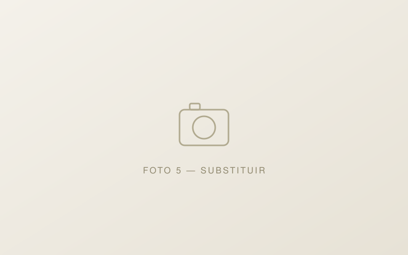

[EDITAR] Licenciatura em …
[EDITAR] Instituição · papel (ex.: estudante, delegado, monitor)
[EDITAR] Contexto, o que fizeste, resultado e impacto. Usa números concretos: médias, classificações por cadeira, lugares no ranking.
Candidatura · Bolsa de Mérito — Concelho de Oeiras · 2026/2027
[EDITAR] Uma frase forte que resuma quem és. Ex.: «Estudante de X em Y, com média de Z, voluntário em W e premiado em …»
Sobre mim
[EDITAR] Apresenta-te em 2–3 parágrafos: onde estudas, o curso, o que te motiva e o que te distingue.
[EDITAR] Refere concretamente resultados (médias, percentis) e envolvimento na comunidade — são critérios avaliados na bolsa. Fala também das tuas aspirações futuras.
Todas as evidências apresentadas neste portefólio estão documentadas na secção respetiva de cada mérito, com certificados, cartas e registo audiovisual.
Matriz de avaliação
Organizado segundo a matriz oficial de avaliação da Bolsa de Mérito do Concelho de Oeiras (Guia de Apoio à Candidatura 2026/2027). Cada categoria apresenta experiências concretas com as respetivas evidências.
Percurso estudantil passível de reconhecimento público — médias, formação complementar e reconhecimento por terceiros.
[EDITAR] Instituição · papel (ex.: estudante, delegado, monitor)
[EDITAR] Contexto, o que fizeste, resultado e impacto. Usa números concretos: médias, classificações por cadeira, lugares no ranking.
[EDITAR] média de conclusão, média de acesso ao ensino superior, prémios de mérito
[EDITAR] Percurso: média de conclusão, exames nacionais, quadros de excelência, louvores.
Prática desportiva, desempenho competitivo e reconhecimento.
[EDITAR] Clube / escola · modalidade · lugar alcançado
[EDITAR] Descrição da participação, resultados e desempenho (meio escolar, regional, nacional ou internacional).
Competições e eventos científicos, trabalho de investigação e reconhecimento por terceiros.
[EDITAR] Entidade organizadora · fase alcançada / resultado
[EDITAR] Descrição: tema, o que desenvolveste, resultados e demonstrações.

Desenvolvimento e demonstração de aptidão artística, sob qualquer forma de arte.
[EDITAR] Entidade / evento · formação (workshops, masterclasses, conservatório…)
[EDITAR] Descrição da atividade artística e da demonstração pública.
Carta de motivação, qualidade da apresentação da candidatura e outros méritos relevantes.
Perfil · percurso de vida · motivações · aspirações futuras
[EDITAR] Resumo da carta: como serás investir o valor da bolsa e o que aspiras para o futuro. A versão integral, datada e assinada, acompanha a candidatura.
Curriculum interativo em formato digital — qualidade, rigor e organização das evidências
O guia oficial prevê a apresentação da candidatura em «curriculum interativo, portefólio, digital, vídeo ou outro formato», com as evidências dos méritos. Este site reúne todas as evidências, organizadas pela matriz de avaliação.
Enquadramento oficial
Esta candidatura segue o Regulamento Municipal n.º 1039/2023 (DR, 27-09-2023) e o Edital n.º 351/2026: candidaturas de 2 de dezembro de 2026 a 4 de janeiro de 2027 · valor de 5.000 € numa única prestação · até 10 bolsas.
![[EDITAR] Foto](assets/img/foto-6.svg)
Mérito Social
Ações em prol da comunidade, responsabilidade social e cidadania ativa.
[EDITAR] Nome da ação / instituição
[EDITAR] Entidade · função · duração (ex.: 120 horas)
[EDITAR] O que fizeste e o impacto na comunidade. Números concretos: beneficiários, horas, resultados.
[EDITAR] Projeto de desenvolvimento do território / cidadania
[EDITAR] Organização · papel
[EDITAR] Descrição do projeto, do teu contributo e do reconhecimento recebido.